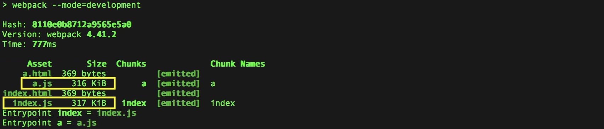
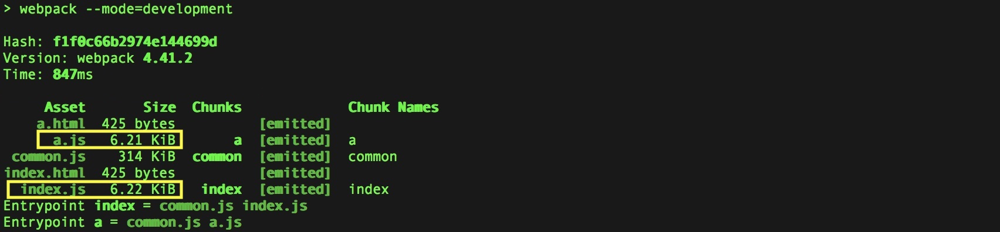
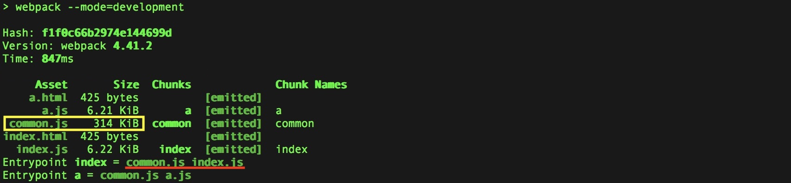
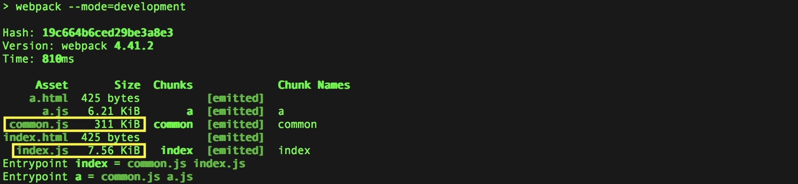
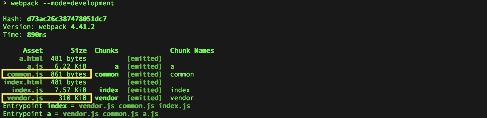
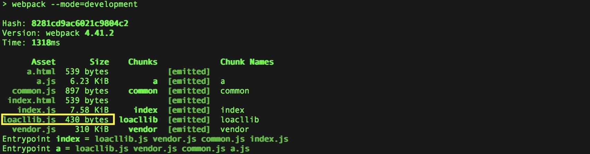
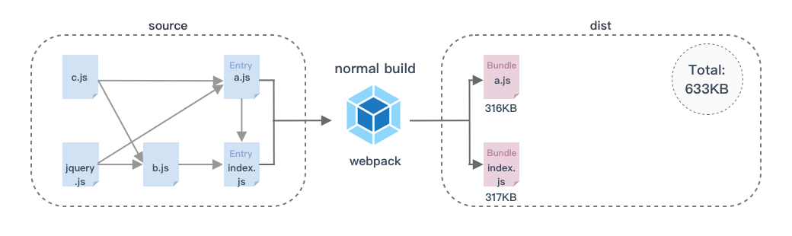
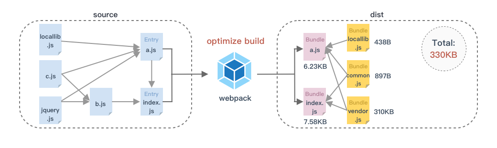

开发多页应用的时候，如果不对webpack打包进行优化，当某个模块被多个入口模块引用时，它就会被打包多次（在最终打包出来的某几个文件里，它们都会有一份相同的代码）。当项目业务越来越复杂，打包出来的代码会非常冗余，文件体积会非常庞大。大体积文件会增加编译时间，影响开发效率；如果直接上线，还会拉长请求和加载时长，影响网站体验。作为一个追求极致体验的攻城狮，是不能忍的。所以在多页应用中优化打包尤为必要。那么如何优化webpack打包呢？
在一切开始前，有必要先理清一下这三个概念：
首先，简单分析下，我们刚才提到的打包问题：
弄明白了问题的原因，那么大致的解决思路也就出来了：
webpack提供了一个非常好的内置插件帮我们实现这一需求：CommonsChunkPlugin。不过在 webpack4 中CommonsChunkPlugin被删除，取而代之的是optimization.splitChunks, 所幸的是optimization.splitChunks更强大！
通过一个多页应用的小demo，我们一步一步来实现上述思路的配置。
demo目录结构：
|--public/
| |--a.html
| |--index.html
|--src/
| |--a.js
| |--b.js
| |--c.js
| |--index.js
|--package.json
|--webpack.config.js代码逻辑很简单，index模块中引用了 a 和 b 2个模块，a 模块中引用了 c 模块和 jquery库，b 模块中也引用了 c 模块和 jquery 库，c 是一个独立的模块没有其他依赖。
index.js代码如下：
//index.js
import a from './a.js';
import b from './b.js';
function fn() {
console.log('index-------');
}
fn();a.js代码如下：
//a.js
require('./c.js');
const $ = require('jquery')
function fn() {
console.log('a-------');
}
module.exports = fn();b.js代码如下：
//b.js
require('./c.js');
const $ = require('jquery')
function fn() {
console.log('b-------');
}
module.exports = fn();c.js代码如下：
//c.js
function fn() {
console.log('c-------');
}
module.exports = fn();webpack先不做优化，只做基本配置，看看效果。项目配置了2个入口，搭配html-webpack-plugin实现多页打包：
const path = require('path');
const HtmlWebpackPlugin = require('html-webpack-plugin');
module.exports = {
entry: {
index: './src/index.js',
a: './src/a.js'
},
output: {
path: path.resolve(__dirname, 'dist'),
filename: '[name].js'
},
plugins: [
new HtmlWebpackPlugin({
template: './public/index.html',
filename: 'index.html'
}),
new HtmlWebpackPlugin({
template: './public/a.html',
filename: 'a.html'
})
]
}在开发模式下运行webpack：

可以看到，打包出两个html和两个体积很大的（300多K）的文件a.js,index.js。
进入dist目录检查js文件：
a.js里包含c模块代码和jquery代码index.js里包含a模块、b模块、c模块和jquery代码看，同样的代码c和jquery被打包了2遍。
首先解决相同代码打包2次的问题，我们需要让webpack把c和jquery提取出来打包为公共模块。
在webpack配置文件添加splitChunks：
//webpack.config.js
optimization: {
splitChunks: {
cacheGroups: {
default: {
name: 'common',
chunks: 'initial'
}
}
}
}cacheGroups是splitChunks配置的核心，对代码的拆分规则全在cacheGroups缓存组里配置。default属性进行了配置，属性名可以不叫default可以自己定。index～a.js这样的。all, async, initial，all 代表所有模块，async代表只管异步加载的, initial代表初始化时就能获取的模块。如果是函数，则可以根据chunk参数的name等属性进行更细致的筛选。再次打包：

可以看到a.js,index.js从300多K减少到6点几K。同时增加了一个common.js文件，并且两个打包入口都自动添加了common.js这个公共模块：

进入dist目录，依次查看这3个js文件：
a.js里不包含任何模块的代码了，只有webpack生成的默认代码。index.js里同样不包含任何模块的代码了，只有webpack生成的默认代码。common.js里有a,b,c,index,jquery代码。发现，提是提取了，但是似乎跟我们预料的不太一样，所有的模块都跑到common.js里去了。
这是因为我们没有告诉webpack（splitChunks）什么样的代码为公共代码，splitChunks默认任何模块都会被提取。
splitChunks是自带默认配置的，而缓存组默认会继承这些配置，其中有个minChunks属性：
我们上面没有配置minChunks，只配置了name和chunk两个属性，所以minChunks的默认值 1 生效。也难怪所有的模块都被抽离到common.js中了。
优化一下，在缓存组里配置minChunks覆盖默认值：
//webpack.config.js
optimization: {
splitChunks: {
cacheGroups: {
default: {
name: 'common',
chunks: 'initial',
minChunks: 2 //模块被引用2次以上的才抽离
}
}
}
}然后运行webpack

可以看到有2个文件的大小发生了变化：common.js由314K减小到311K，index.js由6.22K增大到7.56K。
进入dist目录查看：
a.js里依然不包含任何模块的代码（正常，因为a作为模块被index引入了一次，又作为入口被webpack引入了一次，所以a是有2次引用的）。index.js里出现了b和index模块的代码了。common.js里只剩a,c,和jquery模块的代码。现在我们把共同引用的模块a, c, jquery，从a和index这两个入口模块里抽取到common.js里了。有点符合我们的预期了。
接下来，我希望公共模块common.js中，业务代码和第三方模块jquery能够剥离开来。
我们需要再添加一个拆分规则。
//webpack.config.js
optimization: {
splitChunks: {
minSize: 30, //提取出的chunk的最小大小
cacheGroups: {
default: {
name: 'common',
chunks: 'initial',
minChunks: 2, //模块被引用2次以上的才抽离
priority: -20
},
vendors: { //拆分第三方库（通过npm|yarn安装的库）
test: /[\\/]node_modules[\\/]/,
name: 'vendor',
chunks: 'initial',
priority: -10
}
}
}
}我给cacheGroups添加了一个vendors属性（属性名可以自己取，只要不跟缓存组下其他定义过的属性同名就行，否则后面的拆分规则会把前面的配置覆盖掉）。
minSize设置的是生成文件的最小大小，单位是字节。如果一个模块符合之前所说的拆分规则，但是如果提取出来最后生成文件大小比minSize要小，那它仍然不会被提取出来。这个属性可以在每个缓存组属性中设置，也可以在splitChunks属性中设置，这样在每个缓存组都会继承这个配置。这里由于我的demo中文件非常小，为了演示效果，我把minSize设置为30字节，好让公共模块可以被提取出来，正常项目中不用设这么小。
priority属性的值为数字，可以为负数。作用是当缓存组中设置有多个拆分规则，而某个模块同时符合好几个规则的时候，则需要通过优先级属性priority来决定使用哪个拆分规则。优先级高者执行。我这里给业务代码组设置的优先级为-20，给第三方库组设置的优先级为-10，这样当一个第三方库被引用超过2次的时候，就不会打包到业务模块里了。
test属性用于进一步控制缓存组选择的模块，与chunks属性的作用有一点像，但是维度不一样。test的值可以是一个正则表达式，也可以是一个函数。它可以匹配模块的绝对资源路径或chunk名称，匹配chunk名称时，将选择chunk中的所有模块。我这里用了一个正则/[\\/]node_modules[\\/]/来匹配第三方模块的绝对路径，因为通过npm或者yarn安装的模块，都会存放在node_modules目录下。
运行一下webpack：

可以看到新产生了一个叫vendor.js的文件（name属性的值），同时common.js文件体积由原来的311k减少到了861bytes！
进入dist目录，检查js文件：
a.js里不包含任何模块代码。common.js只包含a和c模块的代码。index.js只包含b和index模块的代码。vendor.js只包含jquery模块的代码。现在，我们在上一步的基础上，成功从common.js里把第三方库jquery抽离出来放到了vendor.js里。
如果我们还想把项目中的某一些文件单独拎出来打包（比如工程本地开发的组件库），可以继续添加拆分规则。比如我的src下有个locallib.js文件要单独打包，假设a.js中引入了它。
//a.js
require('./c.js');
require('./locallib.js'); //引入自己本地的库
const $ = require('jquery')
function fn() {
console.log('a-------');
}
module.exports = fn();可以这么配置：
//webpack.config.js
optimization: {
splitChunks: {
minSize: 30, //提取出的chunk的最小大小
cacheGroups: {
default: {
name: 'common',
chunks: 'initial',
minChunks: 2, //模块被引用2次以上的才抽离
priority: -20
},
vendors: { //拆分第三方库（通过npm|yarn安装的库）
test: /[\\/]node_modules[\\/]/,
name: 'vendor',
chunks: 'initial',
priority: -10
},
locallib: { //拆分指定文件
test: /(src\/locallib\.js)$/,
name: 'locallib',
chunks: 'initial',
priority: -9
}
}
}
}我在缓存组下又新增了一个拆分规则，通过test正则指定我就要单独打包src/locallib.js文件，并且把优先级设置为-9，这样当它被多次引用时，不会进入其他拆分规则组，因为另外两个规则的优先级都比它要低。
运行webpack打包后：

可以看到新产生了一个locallib.js文件。进入dist目录查看：
a.js里不包含任何模块代码。common.js只包含a和c模块的代码。index.js只包含b和index模块的代码。vendor.js只包含jquery模块的代码。locallib.js里只包含locallib模块的代码。现在我们又在上一步的基础上独立打包了一个指定的模块locallib.js。
至此，我们就成功实现了抽离公共模块、业务代码和第三方代码剥离、独立打包指定模块。
对比一下，优化前，打包出来js一共有633KB：

优化后，打包出来js一共不到330KB：

优化打包后的文件分类清晰，体积比优化前缩小了几乎50%，有点小完美是不是！击掌！这还只是我举的一个简单例子，在实际多页应用中，优化力度说不定还不止这么多。
webpack很强大，以上只是冰山一角，但是只要掌握了上述optimization.splitChunks的核心配置，我们就可以几乎随心所欲地按照自己的想法来拆分优化代码控制打包文件了，是不是很酷？玩转代码拆分，你也可以！
如果觉得这些依然不能满足你的需求，还想更精(bian)细(tai)地定制打包规则，可以到webpack官网查看
optimization.splitChunks的更多配置。
欢迎交流～
本文的完整webpack配置和demo源码可以在这里获取：
https://github.com/yc111/webpack-optimize-demo
--
本文同步发表于：
webpack优化之玩转代码分割和公共代码提取 | 掘金